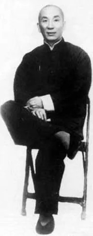
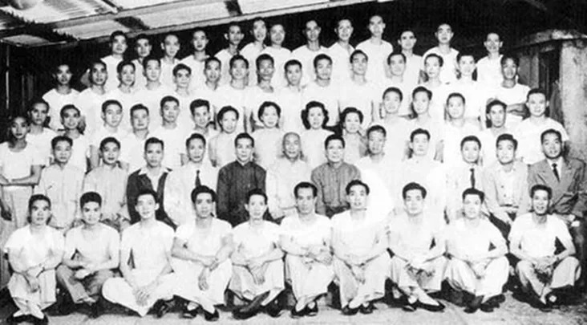

Grande Mestre Yip Man
Por Thomas Pinheiro
O grande mestre Yip Man teve entre seus discípulos: Tsui Sheung Tin, Wong Shun Leung, Yip Bo Ching, Mak Po, Ho Luen, Ho Kam Ming, Fung Hon, Moy Yat, Wong Wai Chung. Apesar do estilo Wing Chun Kuen ser considerado novo para os padrões chineses de cultura, é reconhecido pelo próprio governo chinês, que forneceu inclusive a área para a construção de um museu em homenagem a Yip Man, inaugurado em 2002 na cidade de Fatshan.
Yip Man nasceu em 1893, na província de Fatshan, (Hong Kong, China), tendo começado a treinar Wing Chun sob a tutela de Chan Wah Shun com onze anos de idade, em uma antiga construção, Yip Man pagava a seu mestre oito moedas de prata, o que significava um alto valor para a época. Yip Man tinha como "si hings" , Ng Chang So, Lui Yu Chai, Yuen Kay Chan e Yui Choi. Quando Chan Wah Shun faleceu, Ng Chang So assumiu o ensino junto ao grupo, que continuava a incluir o adolescente Yip Man. Em 1907, devido a um incidente, a família de Yip Man foi forçada a tirá-lo de Fatshan e mandá-lo para o Japão a bordo do navio Aoyama Maru que fazia a rota Hong Kong - Kobe via Shangai.
Durante a viagem Yip Man já encontrara problemas e, depois em terra, viu-se obrigado a se defender, primeiro em um confronto com três indivíduos no cais de Kobe e, depois, resultaria num segundo combate com um oficial de polícia. Após Yip Man lutar e vencer os três marginais, enfrentou também um policial japonês e, mesmo tendo vencido, Yip Man foi preso. Para ser solto, porém deportado, teve de assumir verbalmente a derrota perante o oficial.
Deve-se levar em conta que existiam diferenças políticas e culturais entre China e Japão, e que, portanto, não eram amistosas as relações entre os dois países, as quais configurariam apenas mais tarde, na Segunda Guerra Mundial.
Deportado para a China, Yip Man estabeleceu-se em Hong Kong, reiniciando seus estudos em um colégio da região, chamado St. Stephen’s College. Não tardou, porém, que Yip Man ficasse famoso na escola por meter-se sempre em brigas, mesmo contra oponentes maiores e mais fortes. Em certa ocasião, quando se encontrava em um parque praticando suas técnicas, foi observado por um homem, que achou sua técnica muito parecida com a de um amigo, chamado Leung Bik. Esse homem contou ao amigo o que vira e Leung Bik convidou Yip Man para praticar com ele. Para surpresa do então jovem e arrogante Yip Man, Leung Bik, já de certa idade, superou-o. Yip Man acabaria então treinando com Leung Bik por dois anos, durante os quais aprendeu teorias e aplicações que lhe faltavam.

Em 1913, Yip Man retornava a Fatshan, onde encontraria seus “si-hings” (alunos mais antigos, da época de treino sob a tutela de Chan Wah Shun), mas não treinariam juntos novamente, pois o uso e a compreensão do estilo eram agora diferentes, o que gerava uma restrição entre os alunos quanto àquele novo enfoque.
Ng Chang So afirmou a Yip Man de que as técnicas apresentadas eram Wing Chun, ainda que aplicadas de forma diferente (vale lembrar que devido à morte de Chan Wah Shun supõe-se que tenha ficado incompleto o aprendizado de seus alunos, pressuposto ser o conhecimento de Chan Wah Shun o mesmo de Leung Bik).
Por volta de 1939 Yip Man serviu o exército na guerra contra o Japão e, com o final da Segunda Guerra Mundial, foi morar em Nanhoi, onde se tornou capitão da polícia e passou a trabalhar como detetive policial. Com a chegada da Revolução Comunista foi obrigado a partir para Hong Kong.
A miséria e a falta de trabalho foram provavelmente os fatores que levaram Yip Man a ensinar Wing Chun kung fu profissionalmente, não tratava o ensino da tecnica como mercadoria e via a necessidade de supervisão direta professor/aluno, garantindo assim maior eficiência para o estilo se um menor número de pessoas o conhecessem. Porém enquanto Yip Man residiu em Fatshan sabe-se que teve discípulos entre eles: Kwok Fu, Lun Gai e Yuen Kau Wui. Em Hong Kong, após admitir Leung Sheung como aluno, seguiram-se Lok Yiu, Tsui Sheung Tin, além de muitos outros.
No final dos anos 1960, Yip Man finalmente abriu uma escola para o grande público, academia pela qual passaram mais de mil alunos. Yip Man, todavia, não ministrava mais aulas para todos, apenas aos alunos mais antigos ou em aulas particulares. Em sua academia, eram os alunos mais antigos que ensinavam, com Yip Man apenas supervisionando. Yip Man veio a falecer em 1 de dezembro de 1972, vítima de câncer. É lembrado com muito respeito por aqueles que têm amor pela arte do Wing Chun como “O GRANDE MESTRE”, seja por suas lutas, seja por sua conduta, jamais se utilizando do estilo para sua auto promoção.
 É considerado o patriarca do estilo por ter sido, em época recente, o único ramo da genealogia do estilo. Com o falecimento de Yip Man, o Wing Chun começou a ser divulgado da forma como cada professor compreendeu o sistema, não existindo um líder do sistema, mas sim famílias, com seus respectivos mestres e própria conduta de ensino.